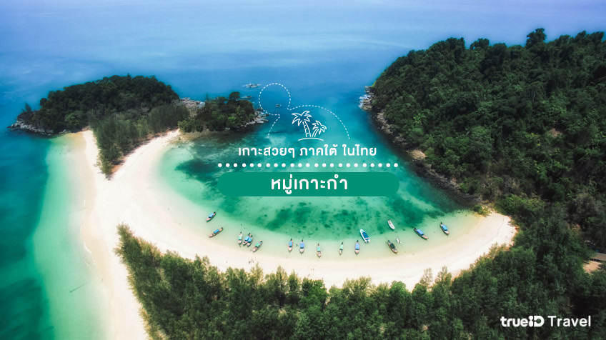
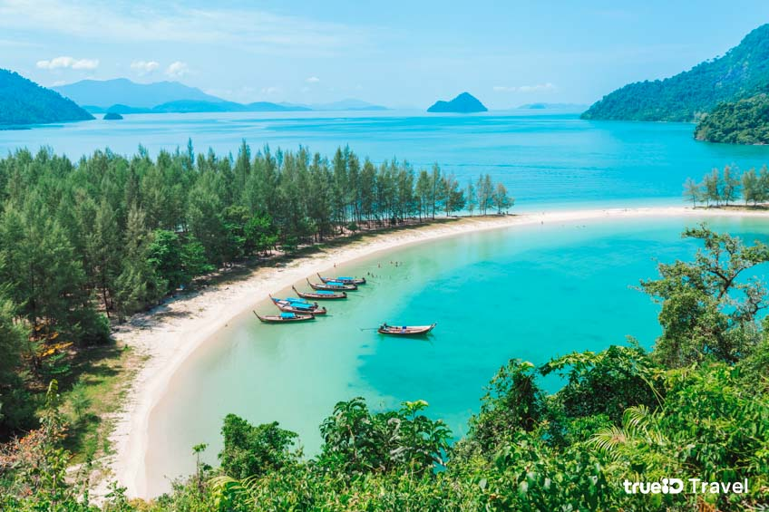

หมู่เกาะกำ ระนอง
หมู่เกาะกำ ตั้งอยู่ที่อุทยานแห่งชาติแหลมสน เป็นอีกหนึ่งในหมู่เกาะที่สวยงามมากๆ แต่นักท่องเที่ยวอาจจะยังไม่รู้มากนัก เพราะถ้าพูดถึงระนองทุกคนมักจะนึกถึงเกาะพยามเป็นส่วนใหญ่ ที่จริงแล้วที่ระนองยังมีหมู่เกาะกำที่สวยงามมากๆอยู่ด้วย ที่นี่มีความสวยงามมาก ทั้งน้ำทะเลใส และหาดทรายขาว เป็นจุดดำน้ำตื้นเล่นน้ำที่สงบเงียบ เหมาะกับการมาพักผ่อนสุดๆ จุดท่องเที่ยวที่พลาดไม่ได้บริเวณหมู่เกาะกำที่มีความงดงามซ่อนอยู่ สวยไม่แพ้ที่อื่นๆเลยก็คือ อ่าวเขาควาย ที่นี่มีเวิ้งอ่าวโค้งสวยงามสุดอันซีน มีชายหาดที่ขาวสะอาด เนื้อทรายเนียนละเอียด น้ำทะเลโดยรอบก็ยังเป็นสีฟ้าและใสมากอีกด้วย
จุดท่องเที่ยวที่พลาดไม่ได้บริเวณหมู่เกาะกำที่มีความงดงามซ่อนอยู่ สวยไม่แพ้ที่อื่นๆเลยก็คือ อ่าวเขาควาย ที่นี่มีเวิ้งอ่าวโค้งสวยงามสุดอันซีน มีชายหาดที่ขาวสะอาด เนื้อทรายเนียนละเอียด น้ำทะเลโดยรอบก็ยังเป็นสีฟ้าและใสมากอีกด้วย